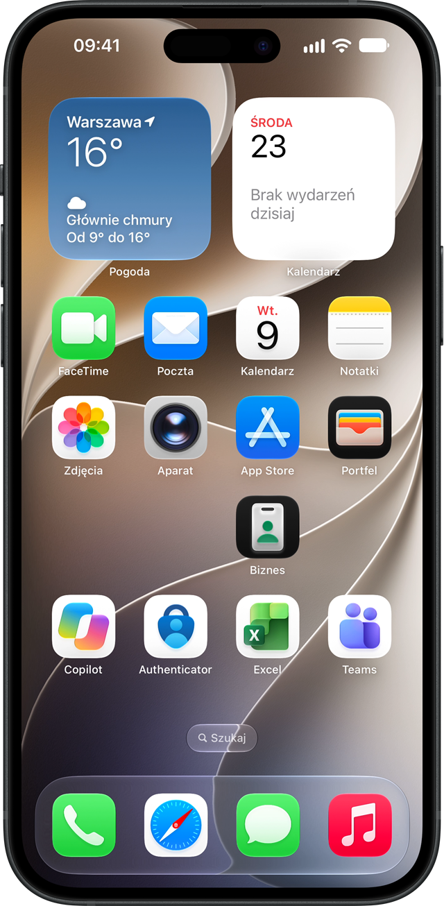

Apple Business dla firm
Zarządzanie firmowymi iPhone'ami
bez dodatkowych licencji
Apple udostępnia firmom Apple Business, wbudowany serwis zarządzania urządzeniami. Wdrażamy go tak, aby nowe iPhone'y i iPady konfigurowały się same, aplikacje instalowały się automatycznie, a firma odzyskała kontrolę nad swoim sprzętem.
- iPhone
- iPad
- Microsoft 365
- Microsoft Entra ID

Najważniejsze
Nie musisz kupować dodatkowych licencji
Większość systemów zarządzania urządzeniami rozlicza się za każde urządzenie, co miesiąc, bez końca. Apple Business zawiera wbudowany serwis zarządzania urządzeniami, z którego firma korzysta bez dodatkowych opłat licencyjnych.
Zero opłat za urządzenie
Nie doliczamy licencji do każdego iPhone'a. Rozliczasz wdrożenie i opiekę, a nie liczbę telefonów w firmie.
Bez zmiany planu Microsoft 365
Zostajesz na swoim Business Basic lub Standard. Nie musisz przechodzić na droższy plan tylko po to, żeby zarządzać telefonami.
Koszt, który się nie skaluje
Dokładasz kolejne urządzenia bez wzrostu opłat licencyjnych. Rośnie flota, nie rachunek za oprogramowanie.
Dla kogo
Masz Microsoft 365 Business Basic albo Standard? To jest dla Ciebie
Microsoft 365 Business Basic i Standard nie zawierają Microsoft Intune, więc nie pozwalają zarządzać urządzeniami. Firma ma pocztę, Teams i dokumenty, ale nie ma żadnej kontroli nad telefonami, na których te dane się znajdują.
Połączenie tych planów z Apple Business nadrabia dokładnie tę lukę. Dostajesz zarządzanie firmowymi iPhone'ami i iPadami, zostając przy swoim planie Microsoft 365.
Sprawdza się najlepiej, gdy
- zatrudniasz od 5 do 100 osób
- pracownicy korzystają głównie z iPhone'ów
- masz Microsoft 365 Business Basic lub Standard
- nie masz własnego administratora IT
- firma kupuje sprzęt, ale go nie ewidencjonuje
Co się zmienia
Zanim wdrożymy i po wdrożeniu
Dzisiaj
- każdy telefon ustawiany ręcznie
- nie wiadomo, kto ma jaki sprzęt
- aplikacje instalują sami użytkownicy
- wymiana telefonu zajmuje kilka godzin
- po odejściu pracownika dane zostają na urządzeniu
- telefon bywa zablokowany prywatnym kontem Apple
Po wdrożeniu
- automatyczna konfiguracja nowych urządzeń
- pełna ewidencja firmowych iPhone'ów i iPadów
- centralne wdrażanie aplikacji firmowych
- wymiana urządzenia w kilkanaście minut
- zdalna blokada i wymazanie urządzenia
- zarządzane konta Apple powiązane z firmą
Zakres
Co otrzymujesz w każdym wdrożeniu
Nie sprzedajemy kolejnego systemu do zarządzania urządzeniami. Uruchamiamy i konfigurujemy to, co Apple udostępnia firmom w ramach Apple Business.
Rejestracja organizacji
Zakładamy i weryfikujemy konto firmy w Apple Business oraz ustawiamy role administracyjne.
Federacja z Microsoft Entra ID
Pracownik loguje się tymi samymi danymi co do Microsoft 365. Jedno hasło, jedna tożsamość.
Zarządzane konta Apple
Konta firmowe pozostają pod kontrolą organizacji, a nie prywatnego konta pracownika.
Przypisanie do firmy
iPhone przypisany do Twojej organizacji sam pobiera ustawienia, aplikacje i konfigurację.
Firmowy katalog aplikacji
Aplikacje kupione przez firmę zostają w firmie i wracają do puli po odejściu pracownika.
Zdalna blokada i wymazanie
Zgubiony albo skradziony telefon blokujesz i czyścisz zdalnie, bez wizyty serwisowej.
Powyższy zakres wchodzi w skład każdego pakietu. Pakiety różnią się wyłącznie skalą wdrożenia.
Uczciwie
Czego to nie zastąpi
Apple Business zarządza urządzeniami Apple. Nie jest platformą bezpieczeństwa Microsoft 365 i nie zastępuje:
- Microsoft Intune
- Conditional Access w Microsoft Entra ID
- Microsoft Defender for Endpoint
- Microsoft Purview
Jeżeli potrzebujesz kontrolować, z jakich urządzeń pracownicy sięgają po firmowe dane, albo wymagać zgodności urządzenia przy logowaniu, przygotujemy rozwiązanie oparte o Microsoft Intune. Powiemy o tym na etapie rozmowy, a nie po podpisaniu umowy.
Usługa obejmuje iPhone oraz iPad. Zarządzanie komputerami Mac realizujemy jako osobny projekt.
Cennik
Wdrożenie
Każdy pakiet obejmuje pełen zakres usługi. Różnica polega na liczbie urządzeń oraz liczbie wariantów konfiguracji, jakie przygotowujemy dla Twojej firmy.
Start
2 999 PLN
jednorazowo · tyle co jeden firmowy iPhone
- do 10 urządzeń
- jeden model wdrożenia
- jeden szablon konfiguracji
- instrukcja rejestracji dla użytkowników
Najczęściej wybierany
Business
5 999 PLN
jednorazowo
- do 30 urządzeń
- dwa modele wdrożenia
- do trzech szablonów konfiguracji
- rejestrację urządzeń prowadzimy razem z użytkownikami
Enterprise
wycena
po audycie floty
- powyżej 30 urządzeń
- osobne ustawienia dla iPhone i iPad
- dokumentacja środowiska
- procedury dla obsługi wewnętrznej
Powyżej limitu pakietu: 299 PLN za każde dodatkowe urządzenie objęte zarządzaniem. Przy większej liczbie urządzeń zwykle korzystniejszy jest wyższy pakiet i powiemy o tym podczas audytu floty.
Opieka
Opieka jest dobrowolna. Po wdrożeniu możesz zarządzać flotą samodzielnie.
Bez opieki
0 PLN
przekazanie po wdrożeniu
- pełna dokumentacja konfiguracji
- firma zarządza flotą samodzielnie
Wsparcie
499 PLN
miesięcznie · do 25 użytkowników
- konsultacje i zmiany konfiguracji
- pomoc przy problemach z urządzeniami
Zarządzanie
999 PLN
miesięcznie · do 25 użytkowników
- pełna administracja usługą
- dodawanie nowych urządzeń i użytkowników
- wsparcie użytkowników końcowych
Powyżej 25 użytkowników: 29 PLN za każdego dodatkowego użytkownika miesięcznie. Ceny netto i obejmują pracę naszych specjalistów. Apple Business nie wymaga opłat licencyjnych za zarządzanie urządzeniami, więc nie ma tu nic do doliczenia.
Pytania
Najczęstsze pytania
Czy zarządzanie urządzeniami Apple wymaga dodatkowych licencji?
Nie. Apple Business zawiera wbudowany serwis zarządzania urządzeniami, z którego firma korzysta bez dodatkowych opłat licencyjnych. Płacisz za wdrożenie i opiekę, a nie za licencję na każde urządzenie.
Mam Microsoft 365 Business Standard. Czy mogę zarządzać firmowymi iPhone'ami?
Microsoft 365 Business Basic i Standard nie zawierają Microsoft Intune, więc same w sobie nie pozwalają zarządzać urządzeniami. Połączenie z Apple Business uzupełnia tę lukę bez zmiany planu Microsoft 365.
Czy usługa obejmuje komputery Mac?
Nie. Usługa obejmuje iPhone oraz iPad. Zarządzanie komputerami Mac realizujemy jako osobny projekt, ponieważ macOS wymaga innego modelu rejestracji i innych mechanizmów zabezpieczeń. Napisz do nas, jeśli Cię to interesuje.
Czy Apple Business zastępuje Microsoft Intune?
Nie. Apple Business obejmuje urządzenia Apple i nie zastępuje Intune, Conditional Access, Defender for Endpoint ani Purview. Jeżeli potrzebujesz kontroli dostępu do danych Microsoft 365 opartej na zgodności urządzenia, przygotujemy osobne rozwiązanie.
Czy mogę zdalnie zablokować zgubiony firmowy telefon?
Tak. Urządzenie można zdalnie zablokować, sprawdzić jego ostatnią lokalizację oraz wymazać. Warunkiem wykonania polecenia jest połączenie urządzenia z internetem.
Czy obejmiemy zarządzaniem sprzęt, który już mamy?
Tak. Część modeli rejestracji wymaga przywrócenia urządzenia do ustawień fabrycznych, inne pozwalają objąć zarządzaniem urządzenie już używane. Właściwą ścieżkę dla Twojej floty ustalamy podczas audytu.
Ile trwa wdrożenie?
Rejestracja firmy w Apple Business po stronie Apple potrafi zająć od kilku dni do 2 tygodni. Sama konfiguracja i integracja z Microsoft Entra ID to zwykle kilka dni roboczych. Czas objęcia zarządzaniem całej floty zależy od liczby urządzeń.
O nas
Valcreon®
Jesteśmy polską firmą specjalistyczną. Zarządzamy i zabezpieczamy Microsoft 365 z myślą o małych i średnich przedsiębiorstwach, ponieważ mierzą się one z tymi samymi zagrożeniami co korporacje, ale nie mają takich samych możliwości ochrony. To staramy się zmieniać.
Serwis applemdm.pl jest częścią Valcreon i odpowiada za jeden konkretny obszar: zarządzanie firmowymi urządzeniami iPhone i iPad w organizacjach korzystających z Microsoft 365. Pracujemy na środowiskach produkcyjnych klientów, a nie na prezentacjach, dlatego mówimy wprost, kiedy dana technologia wystarczy, a kiedy potrzebne jest rozwiązanie szersze.
Specjalizacja
Microsoft 365, Microsoft Entra ID, Intune oraz zarządzanie urządzeniami Apple w firmach.
Skala
Obsługujemy organizacje od kilku do kilkuset użytkowników, w tym instytucje publiczne.
Podejście
Najpierw audyt i rekomendacja, potem wdrożenie. Bez sprzedawania funkcji, których firma nie potrzebuje.
Porozmawiajmy o Twojej flocie
Krótka rozmowa wystarczy, żeby ocenić, czy Apple Business rozwiąże Twój problem i ile urządzeń da się objąć zarządzaniem od razu.